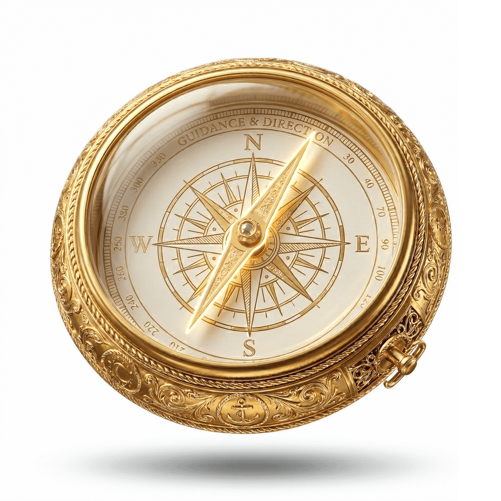

What this work is really about
Waar dit werk echt over gaat
Coming home to who you actually are.
Thuiskomen bij wie je echt bent.
This isn't self-improvement. It's self-recognition. The goal isn't to become a better version of yourself — it's to stop performing a version of yourself that was never really you. We work at the root, not the symptoms. Across all four layers: mind, body, energy, soul.
Dit is geen zelfverbetering. Het is zelfherkenning. Het doel is niet een betere versie van jezelf worden — het is stoppen met het opvoeren van een versie van jezelf die nooit echt jij was. We werken bij de wortel, niet bij de symptomen. Over alle vier de lagen: geest, lichaam, energie, ziel.
Book a Free Call →
Plan een gratis gesprek →